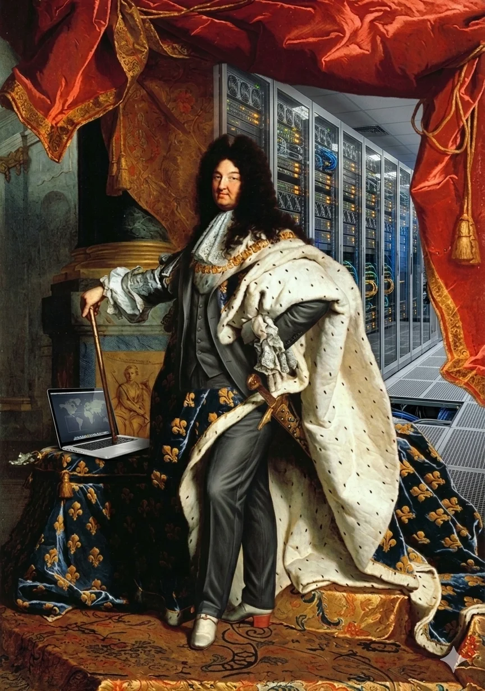
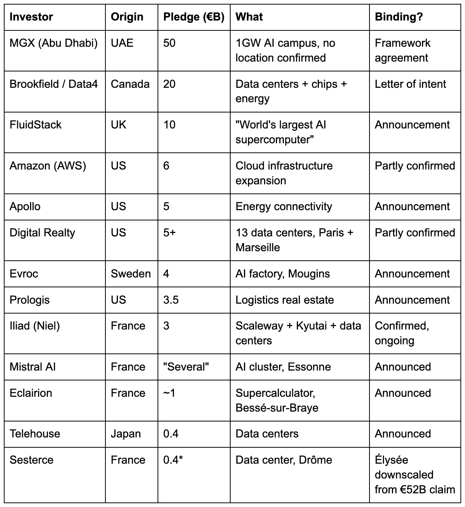
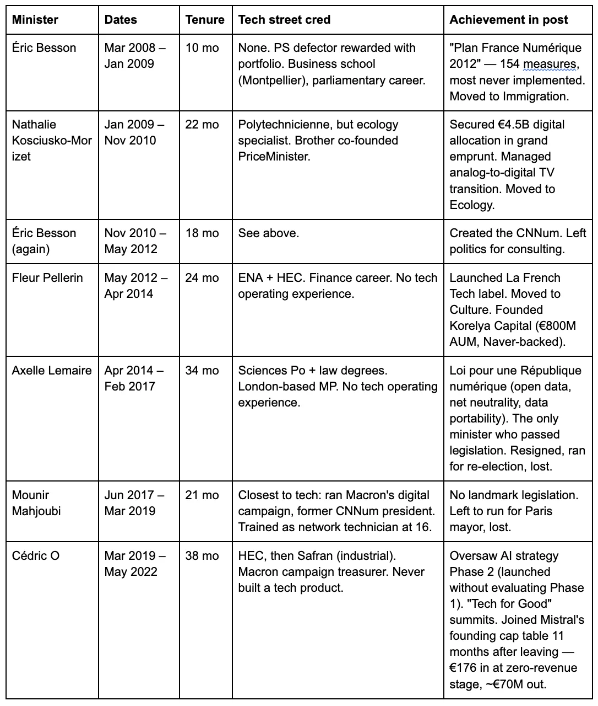

In the winter of 1972, in a cellar in Châtenay-Malabry, a suburb south of Paris, an engineer named François Gernelle worked eighteen-hour days to meet a deadline from the Institut National de Recherche Agronomique. The INRA wanted a cheap way to calculate evapotranspiration. Gernelle, who had left his previous employer because they refused to believe in microprocessors, proposed something no one had built before: a general-purpose computer powered by an Intel 8008, small enough to sit on a desk, sold commercially for 8,500 francs — roughly a fifth the price of a minicomputer.[1] He delivered it in January 1973. The word “microcomputer” first appeared in print to describe his machine.[2]
Within a decade, Gernelle’s company R2E had been absorbed by Groupe Bull, the French national champion in computing. By 1983, Gernelle had left. By 1989, the Micral brand was dead.[3] In 2017, Paul Allen — co-founder of Microsoft — bought a Micral N at a French auction house for his Seattle museum.[4] France invented the personal computer and shipped it to America as a collectible piece.
This is not ancient history. It is a script, and France keeps performing it. The state built a sovereign cloud in 2012 and burned €150 million of public money for €2 million in revenue before quietly shutting it down.[5] The state commissioned report after report on AI and cycled through digital ministers in rapid succession, each arriving with a strategy and departing before anyone could measure its failure.[6] The state hosted an AI summit in February 2025 where Macron announced €109 billion in investment pledges, roughly a third to nearly half of which came from a single Abu Dhabi sovereign wealth fund whose money has no legal obligation to arrive.[7]
And at the center of it all, there is Emmanuel Macron — not failing at AI, but succeeding at something else entirely. On national television, the night before the summit, the president told French citizens to “go and download Le Chat, which is made by Mistral, rather than ChatGPT” — product placement for a company whose founding cap table includes his former Secretary of State for Digital Affairs. He posted AI-generated deepfake videos of himself on Instagram. He fist-bumped a robot at Station F. He told assembled executives: “I have a good friend on the other side of the ocean saying ‘drill, baby, drill.’ Here there is no need to drill. It’s ‘plug, baby, plug.’” Day 1 ended with a DJ set. Dario Amodei called it a “missed opportunity.” The declaration was signed by sixty countries but not the United States or the United Kingdom. And Macron invoked Notre-Dame — the cathedral rebuilt in five years — as the model for AI, as if a construction project managed by retired generals applied to a technology that reinvents itself faster than any committee can meet.[67]
One year later, at the AI Impact Summit in New Delhi, he was still performing. The €109 billion in non-binding pledges had become “we are delivering this project — €58 billion in 2025.” The number comes from a UNCTAD (United Nations Conference on Trade and Development) report that countedannouncedforeign greenfield projects in France — and 87 percent of the total consists of two entries: MGX and Brookfield, the same pledges from the Paris summit, reclassified as FDI announcements. No ground has been broken on the MGX campus. L’Usine Nouvelle, reviewing Bercy’s one-year data, concluded it remained “difficult to know which investments have actually been realized.” The same money, counted three times: once as a summit pledge, once as a UNCTAD greenfield announcement, once as “delivery” in Delhi.[81]
He listed Hugging Face — a company incorporated in New York — and Poolside — founded by Americans — as French AI achievements. He said “we invested in European large language models” about Mistral, as if the state had founded a company built by three researchers who left France, trained at American and British labs, and came back with American venture capital. The word “we” is the pattern compressed into a pronoun.
None of this produced a single line of code, a single trained model, or a single company. And yet — Mistral exists. Hugging Face exists. A generation of Polytechnique graduates trained atAmericanlabs is building real AI companies in Paris withAmericanventure capital running onAmericanGPUs. The paradox is not that France fails at AI. The paradox is that Frenchpeoplesucceed at AI while the Frenchsystemfails at everything, including getting out of their way.
The numbers the summits don’t mention
Against a backdrop of 5.8 percent deficits, 113 percent debt-to-GDP, and four prime ministers in fourteen months, the state promises a revolution in artificial intelligence.[8][9][10] The promises are a masterclass in political accounting. The €109 billion announced at the AI Action Summit — which Macron compared favorably to America’s $500 billion Stargate project — is an aggregate of multi-year, non-binding pledges from foreign sovereign wealth funds, domestic incumbents, and at least one startup that announced €52 billion in AI investment on annual revenue a fraction of that size.[11] Here is what the number actually contains, reconstructed from Élysée press materials and reporting by The Media Leader, Maddyness, and the Journal des Entreprises:
The €109 Billion, Broken Down

* Sesterce deserves its own paragraph. The company — a Marseille-based GPU cloud provider that pivoted from cryptocurrency mining — announced €52 billion in AI investment at the summit. The number was calculated, as L’Usine Digitale reported, by multiplying the catalogue price of a Nvidia Blackwell B200 GPU (€33,000) by 1.2 million units and adding roughly €12 billion for infrastructure. Sesterce’s 2023 revenue was €20 million. The pledge-to-revenue ratio is 2,600-to-1. The CEO acknowledged to L’Usine Digitale that the company “obviously does not have €52 billion in equity” and that “the rest will come with clients and financiers later.” The Élysée quietly recorded only the first tranche at €400 million. Even so, the Journal des Entreprises noted that the €52 billion claim exceeded total US private AI investment in 2023. The summit accepted it. The headline absorbed it. The €109 billion got larger. On February 5, 2026 — five days before the one-year anniversary of its summit announcement — Sesterce Group entered judicial restructuring (redressement judiciaire) in the Marseille commercial court.[12]
Read the origin column. The top three pledges — MGX, Brookfield, and FluidStack — total €80 billion and come from the UAE, Canada, and the UK respectively. None is European Union money. Add Amazon, Apollo, Digital Realty, and Prologi,s and the non-EU total reaches approximately €90 billion. The identifiably French commitments — Iliad, Mistral, Eclairion — sum to roughly €5-7 billion.[13]
The €109 billion is not a French AI strategy. It is a real estate brochure for foreign data center operators, denominated in non-binding pledges from non-EU capital, with no disbursement schedule, no enforcement mechanism, and no penalty for non-delivery. Gilles Babinet, co-president of the Conseil National du Numérique, said publicly: “The reality of this money remains to be seen.”[13]
The other €110 billion nobody talks about
The real money — the money that actually gets spent, every year, without a summit — goes somewhere the summits never mention. TheCrédit d’Impôt Recherche, France’s R&D tax credit, was created in 1983 as a modest incentive capped at three million francs. It stayed modest for twenty-five years. Then, in 2008, the government uncapped it and shifted the basis from incremental to volume — 30 percent ofallR&D spending up to €100 million. The cost exploded: €1.7 billion in 2007, €4.15 billion in 2008, €5.2 billion by 2011, and €7.7 billion today.[14][28] The CNRS scientific council noted in 2014 that the CIR quintupled from €980 million to €5.1 billion between 2006 and 2011 without any observable stimulus effect on private research spending.[76]
Over forty-two years, the CIR has cost the French state approximately €110 billion in foregone tax revenue — roughly €20 billion before the 2008 reform and approximately €90 billion since.[77] The CIR serves all R&D, not just technology — pharma, aerospace, automotive. But even by its own terms, it is a bandaid on a wooden leg. The CDI (permanent contract) that makes firing legally expensive, the 35-hour work week, works council consultations that slow down decision-making in American startups, exit barriers, regulatory unpredictability, and ministerial churn — all make it expensive and risky to do R&D in France. Rather than fix the leg, the state offers a tax credit to offset the cost of the dysfunction.
The top fifty beneficiaries, which include Sanofi, Airbus, Safran, and the French subsidiaries of American tech companies, capture approximately 45 percent of the total — in exchange for paperwork that describes existing engineering as novel research.[15] A 2021 government evaluation found the CIR’s impact multiplier for large firms is approximately 1.0, with negligible spillover to the broader economy.[16] For smaller firms, the additionality is higher, but the top fifty beneficiaries capture 45 percent of the total.
One euro in, one euro of R&D that would have happened anyway. French economist Charles Gave has a phrase for how French industrial policy works: “Créer la pénurie pour distribuer les tickets de rationnement aux plus obéissants” — create the scarcity, then distribute the ration tickets to the most obedient.[41] The CIR is the ration ticket. €110 billion to treat symptoms — some of it funding the very foreign labs that trained Mistral’s founders. Zero to treat the disease.
The CIR is also the state’s most effective recruitment tool for foreign capital. The tax credit attracted Google, Meta, and DeepMind to open research labs in Paris, where they trained the generation of researchers who became Mistral’s hiring pool.[29] Lample and Lacroix worked at Meta’s FAIR lab in Paris. The ecosystem that shaped them was funded in significant part by French tax incentives flowing to American corporations whose Paris offices exist because the CIR makes French researchers cheaper than Californian ones. France spent billions subsidizing the training ground. America captured the company. The state paid for the education, subsidized the employer, and then co-invested as a minority investor who led no rounds.
I know how the CIR works in practice because I wrote the dossiers. At Criteo, assembling the annual CIR claim was a ritual: you took the R&D work the engineers were already doing, repackaged it in the language the Ministry of Research wanted to see — “state of the art,” “technological uncertainty,” “experimental development” — and submitted it to recover 30 percent of eligible salary costs. The research would have happened regardless. The CIR didn’t change what we built. It changed how we described what we built. It is not an innovation policy. It is a payroll subsidy with a scientific vocabulary.[66]
€110 billion in CIR tax credits at a 1.0 multiplier. The state had the resources to build a powerful sovereign technology fund. Instead, it invited Abu Dhabi to build one on its behalf.
The absorption loop
The mechanism is simple. Entrepreneurs innovate; the state absorbs their innovation into institutional frameworks; bureaucratic logic neutralizes competitive speed; the resulting champion fails or stagnates; the state rescues the wreckage, claims credit for whatever escaped, and the political pressure to reform disappears. The loop has been running for fifty years.
It was not always this way. Jean-Baptiste Colbert, Louis XIV’s minister of finance, built France’s manufacturing base in the seventeenth century through state-chartered monopolies, protected markets, and centrally directed investment. Nuclear, TGV, Airbus, Ariane — the great postwar achievements — are Colbert’s methods applied to twentieth-century hardware. And they worked, in part, because they were led by engineers rather than administrators. Pierre Guillaumat, a Polytechnicien and Corps des Mines engineer who had fought in the Resistance, ran the CEA, built France’s nuclear industry, then ran Electricité de France, then created Elf-Aquitaine.[78] Louis Armand, another Polytechnicien, electrified and modernized the French Railways, then ran Euratom.[79] Marcel Dassault (Supaéro) built the aviation empire. André Turcat — Polytechnique again — was the first European to break the sound barrier and flew Concorde’s maiden flight.[80] These were grandes écoles engineers who understood what they were building because they could have built it themselves. The great national projects succeeded because technical authority and decision-making authority were held by the same people.
The technocrats.Starting in the 1980s, administrators replaced the engineers. The inner circle of French elite leadership shifted from Polytechniciens and Supaéro graduates who had run reactors and railways to generalists who had run ministerial cabinets — trained to manage process, not to judge technology. The distinction is not which school they attended but whether they ever built anything. Colbertism worked when the people pulling the levers had built things. It fails when the levers are pulled by administrators who have never shipped a product, and it fails catastrophically in software, because software moves too fast for committees. AI is the most software-intensive strategic technology in history, and France is running a seventeenth-century playbook against a technology that reinvents itself every six months.
France has had eleven digital ministers in seventeen years. Here is what they brought and what they left behind.[34]
The Minister Carousel

Four more followed — Barrot, Ferrari, Chappaz, Le Hénanff — none with tech operating experience, none lasting longer than twenty months, none passing legislation.[34]
Eleven ministers in seventeen years. One passed legislation — Axelle Lemaire’s Loi pour une République numérique in 2016. The rest produced plans, labels, and summits, then moved on before anyone could measure the results. The CNNum was dissolved in 2025.[35] La French Tech is a marketing success. The reforms that actually improved the startup ecosystem (the flat tax, the PACTE law) came from the Ministry of Finance, not from La French Tech, which had no role in designing them.[36] The system’s signature move: create an institution, give it no power, claim its existence proves action, and dissolve it when the next minister arrives.
When the government was confronted with a technology it did not understand, it did what it always does: commissioned a report. The 2018 Villani report — 233 pages from a Fields Medalist math genius whose core team included zero entrepreneurs and no analysis of the venture capital structures or compute costs already driving American AI labs at ten times the scale of French public investment.[30][31] Two-thirds of its recommendations were reportedly implemented; none had any documented connection to a globally competitive French AI company.[32] The Cour des Comptes (France’s supreme audit institution) confirmed: Phase 2 of the national AI strategy was launched without evaluating Phase 1.[33]
The report was the product. It landed on the desk of INRIA, designated State Operator for the AI strategy — 3,800 researchers who produced Scikit-learn and OCaml for the global commons, spun off 230 startups in thirty-five years without producing a single unicorn, and trained a generation of engineers who left to build somewhere else. The pattern at the institutional scale: France funds the research, the world captures the value.[60]
€176 to eight figures
The revolving door between government, industry, and regulation —pantouflage, the French term for officials trading public authority for private profit — is not corruption in the legal sense. It is the absorption loop operating at the personnel level.
Cédric O served as Macron’s Secretary of State for Digital Affairs from 2019 to 2022 — overseeing France’s AI strategy and its position on EU tech regulation. Eleven months after leaving government, he joined the founding cap table of Mistral AI in April 2023, listed as “conseiller-fondateur” — advisor-founder. His entry ticket: €176.10, purchasing 17,610 shares at one cent each through his consulting company Nopeunteo, giving him 1.17 percent of the initial capital.[57] The three technical founders — Mensch, Lample, and Lacroix — held 95.3 percent. O’s contribution was not technical. It was political access. By December 2023, that stake was worth approximately €23 million. By June 2024, after the Series B valued Mistral at €6 billion, roughly €70 million. By September 2025, the Series C valued Mistral at €11.7 billion — four dilutive rounds have reduced O’s percentage, but the trajectory from €176 to eight or nine figures in under three years is not in dispute. He cashed out approximately €1 million by selling shares during the Series A. The Haute Autorité pour la Transparence de la Vie Publique had explicitly prohibited O from lobbying his former ministries — he structured his investment around the restriction by purchasing shares through his consulting company rather than in his own name. The HATVP declined to comment. [57]
And then he used his political network to lobby against the very regulation he had overseen. In June 2023, he co-organized a 150-executive open letter against the AI Act’s foundation model provisions.[69] In October, he told Sifted the AI Act could “kill Mistral.” In November, he coordinated with the Élysée to align France, Germany, and Italy against binding foundation model rules during the final negotiations on the AI Act, replacing them with voluntary self-regulation. It was Mistral’s exact position, adopted as French foreign policy. Bloomberg Businessweek reported that activists responded by driving vans through the streets of Paris and Brussels bearing O’s photograph and a digital billboard reading: “EU AI Act Without Foundation Models = Climate Act That Excludes Big Oil.”[70] O has since left Mistral to raise €10 million for a new edtech startup.[58]
Read the sequence again: minister, founding shareholder, lobbyist, equity holder, exit — in eighteen months. O’s career is the absorption loop compressed into a single biography. The system does not circulate its elites despite the conflict of interest. The system circulates its elitesthroughthe conflict of interest. The conflict is the mechanism.
The companies they killed
The Micral — the personal computer France invented and shipped to a Seattle museum — is the founding exhibit. But it was not an isolated case. Plan Calcul (1966) collapsed within a decade.[17] Bull consumed over $1 billion in subsidies for 1 percent margins (1982).[18] Thomson’s no-bid contract produced computers that teachers hated so much that the program was abandoned by 1985.[19] Minitel pioneered online services a decade before the web — then France Télécom’s monopoly delayed internet adoption by years.[73] Different decades, different technologies, identical script.
If you wanted a career that embodies the pattern, you could not improve on Thierry Breton’s. The state privatized Bull — France’s flagship computer manufacturer, builder of the supercomputers that ran the country’s nuclear simulations. Bull was absorbed by Atos, which Breton built into one of Europe’s largest IT services companies, with 100,000 employees across 73 countries, and an IT partner for the Olympic Games. As CEO from 2008 to 2019, Breton oversaw the acquisition of Syntel for $3.57 billion (approximately €3.1 billion at the time) — financed entirely by debt.[24] At its 2017 peak, Atos had a market capitalization of approximately €12 billion. By 2024, more than 98 percent of that value had been destroyed, and the company was drowning in €4.65 billion of debt.[25] Worldline, the payment subsidiary Breton spun off from Atos — Europe’s largest payment processor, handling billions of transactions a year — lost 59 percent of its value in a single session under a CEO who had served as Breton’s directeur de cabinet — and was ejected from the CAC 40 (France’s blue-chip index).[75] The French state then bought back Bull’s supercomputer division from the wreckage at distressed prices. Breton’s response to the collapse: “I have no responsibility, zero.”[26]
In any functioning system, this would end a career. In France, Breton became the European Commissioner for the Internal Market — where he championed an AI Act approach that treated every foundation model, including open-weight research releases, identically to a medical device until months of industry pushback forced a restructuring.[27] Atos destroyed. Bull repurchased. Breton promoted. The loop does not punish failure. The loop promotes it.
The infrastructure desert
The sovereign cloud chapter is the proof. The state invested €150 million through the Caisse des Dépôts (the state investment bank), split between two competing consortia — Cloudwatt (Orange/Thales) and Numergy (SFR/Bull) — because Orange and SFR refused to cooperate.[20] The hiring told you everything: Cloudwatt recruited leadership from Dell, HP, and Orange — enterprise hardware executives, not cloud engineers. I know because they asked me to interview. It was a fifty-person company supposed to compete with AWS, staffed like a mid-tier telco equipment vendor.[56] By 2014, Cloudwatt had generated approximately €2 million in revenue against an original target of €500 million.[21] Numergy managed €6 million, 80% of which came from a single SFR internal contract.[22] The Ministry of Finance stopped disbursing funds in 2015.[23] Orange absorbed Cloudwatt; SFR absorbed Numergy. The platforms were quietly shuttered.
The state’s response was not to build domestic capability. It was to rebrand the dependency. France’s next attempt — S3NS (Google/Thales) and Bleu (Microsoft/Orange/Capgemini) — runs 100 percent American technology in a French legal wrapper, operated by the same companies that failed at Cloudwatt.[37] ANSSI, the national cybersecurity agency, certified S3NS in December 2025, and its director general, Vincent Strubel, was blunt: SecNumCloud is “a cybersecurity tool, not industrial policy.” S3NS and Bleu could maintain operations for only six to twelve months without access to American updates. Imagining fully European cloud offerings exist is, Strubel said, a fantasy.[37] Legal sovereignty without operational sovereignty is a lease with an expiry date.
And beyond the leases, there is no sovereignty at all. The €109 billion features a data center campus whose largest investor, MGX, is controlled by the ruling family of Abu Dhabi, and whose commitment to French digital sovereignty aligns with its expected return on capital.[39] At every layer of the stack — chips, cloud, models — France depends on foreign actors while using French legal wrappers to claim ownership of the dependency.
The closest thing France has to a sovereign cloud is Scaleway — built not by Orange, Atos, or any national champion, but by Xavier Niel, a maverick entrepreneur who never attended a Grande École and made his first fortune running adult chat services on Minitel Rose.[65] Niel broke France Télécom’s monopoly byfightingthe state, not by contracting with it. Through Scaleway, he has deployed Europe’s largest cloud-native AI compute cluster. Mistral trained early models on it. He funds roughly a hundred startups a year through Kima Ventures. The system does not produce its own infrastructure builders. The outsider does.
Strip out Niel, and what remains of the French AI “ecosystem” is Rodolphe Saadé — chairman of CMA CGM, the world’s third-largest shipping company, one of Macron’s closest business allies — whose €500 million in AI spending is indistinguishable from a relationship maintenance program.[62][63][64]
The state-provided compute
Jean Zay, France’s showcase public AI facility, went five years without a GPU upgrade — 2019 to mid-2024 — during which every frontier lab in the world moved on. The mid-2024 upgrade created a chimera of three GPU generations that no frontier lab would train on.[60] For context, Mistral trained Large 3 on 3,000 H200 GPUs through Azure — twice the size of Jean Zay’s entire H100 partition, a chip generation newer and available on demand without a grant application.[61]
Hugging Face used Jean Zay to train BLOOM in 2022. INRIA still cites BLOOM as a flagship achievement. What INRIA does not advertise is what happened next: for StarCoder and every subsequent training run, Hugging Face moved to AWS.[60] The state promises sovereignty. The practitioners choose whatever actually works.
Alice Recoque, France’s forthcoming exascale supercomputer, uses AMD processors fabbed at TSMC in Taiwan.[40] The machine that is supposed to deliver sovereign compute depends on American chips manufactured on a Chinese-claimed island. The state’s answer to every layer of dependency is another layer of dependency with a French label on top.
What actually exists
One part of the French system genuinely works for AI: the Grandes Écoles produce mathematicians and engineers that DeepMind and Meta hire in their research labs, in Paris and elsewhere. Some of those researchers then leave and start new companies. This pipeline produced Mistral’s founders, Hugging Face’s founders, and LeCun himself. It is genuinely world-class, and it works because competitive examination has proven more resistant to political interference than industrial policy. The pipeline succeeds because its selection mechanism is harder to corrupt than the apparatus described in every other paragraph of this piece.
If the pipeline were the strategy, the state would fund the Grandes Écoles, create an innovation- and growth-friendly environment, and stop there. No summits, no reports, no ministers, no €109 billion in performative pledges, no €7.7 billion CIR. Instead, the state funds the pipelineandbuilds the apparatus — an apparatus that produces no companies, consumes €110 billion in tax credits with a 1.0 multiplier, and claims credit for the pipeline’s outputs. The apparatus is not the strategy. The apparatus is the tax on the strategy.
The outsiders
Mistral is real. Founded in April 2023 by Arthur Mensch (ex-DeepMind), Guillaume Lample, and Timothée Lacroix (both ex-Meta), it raised a €1.7 billion Series C at a €11.7 billion valuation in September 2025, with ASML as the lead investor.[42] ARR has crossed $400 million, and Mensch has guided toward €1 billion in revenue for 2026; roughly 60 percent comes from European clients seeking alternatives to American providers.[43][44] But France’s system had nothing to do with producing it. Mistral is a company founded by three researchers who left France, trained at American and British labs on American infrastructure, returned with American venture capital, and chose to incorporate in Paris because “it’s where we’re from”—a personal preference, not an industrial strategy.[47] The talent is Polytechnique. The capital is Lightspeed, Andreessen Horowitz, and General Catalyst. The compute is Nvidia through Azure. BPI France co-invested in every round but led none.[45][38][46]
And the loop is already reaching for it. Cédric O is on the founding cap table. Macron promotes Le Chat on national television. Mensch is at the signing table — standing beside Macron at the February 2025 summit, then again in New Delhi a year later, while the president once again claims “we invested” in Mistral. Mistral began by releasing open-weight models under an Apache 2.0 license. Its most capable systems are now behind commercial licenses and behind sovereignty contracts.[82] The company that started open is closing, and the closing tracks the state’s gravitational pull.
Hugging Face — arguably France’s single most important contribution to the global AI ecosystem — was co-founded in 2016 by three French nationals who incorporated in America and built a large team in France. $4.5 billion valuation on American cap tables.[54] Delangue testified before the US House on the importance of open-source AI, participated in the Senate’s AI Insight Forum, and submitted an open-source policy blueprint for the White House AI Action Plan — advocating for the technology’s future from inside the American policy apparatus, not the French one. No cabinet minister on the cap table. No summit photo ops. No sovereignty contracts. They kept their distance, and the loop has not reached them — so far.
LeCun chose Paris for Meta's FAIR research lab in 2015 — funded byMeta, not the French state, because French researchers are world-class and French salaries are lower than San Francisco's.[55] In March 2026, he left Meta and launched AMI Labs, a world-model startup headquartered in Paris. It just raised $1.03 billion at a $3.5 billion valuation — Europe's largest seed round — from Nvidia, Temasek, Bezos Expeditions, and Eric Schmidt. The CEO is an alumnus of FAIR Paris. The key hires come from Meta and DeepMind. BPI France co-invested. It did not lead. The state interprets this as a win. It is a precise repetition of the pattern: France trained the talent, America built the career, and when the company was founded, the state showed up as a minority co-investor in a round led by Nvidia and Bezos.
Beyond those three, there is not much. H Company, another French AI foundation-model startup, lost three of its five co-founders within a year of its launch.[48] Kyutai produces research, not revenue. LightOn raised €62 million through an IPO, valuing it as a small-cap.[49] Poolside, which relocated to Paris, was founded by Americans.[50]
The first French unicorn turns 20 and leaves
In 2013, Fleur Pellerin — then minister for the digital economy — was sipping champagne at Criteo cocktail parties, celebrating France’s first true tech unicorn. (Full disclosure: I was VP Engineering at Criteo from 2010 to 2014 and hold no financial interest in the company.)[53] Founded in 2005, Criteo is an ML-powered performance advertising platform at scale, was listed on NASDAQ in 2013, and runs one of the largest production machine learning systems in Europe. The French state’s reward for building one of Europe’s few globally competitive ML systems: in June 2023, the CNIL — France’s data protection authority — fined Criteo €40 million for GDPR violations related to consent verification — approximately four times the company’s 2022 net profit. The Conseil d’État (France’s highest administrative court) upheld it in March 2026.[68] The same state that subsidizes R&D through the CIR fines the company that actually shipped production ML. The regulatory arm does not know what the innovation arm is doing — or does not care.
In October 2025, Criteo announced it was redomiciling to Luxembourg — the intermediate step. The destination is the United States. Shareholders approved the move on February 27, 2026.[51] The company’s own FAQ states the reason with corporate bluntness: “French law does not provide a framework for direct merger into a U.S. corporation.”[52] France’slegal structureprevents a French company from being acquired through a direct merger by an American buyer. This is not a bug in French corporate law. It is the absorption loop codified in statute — and the mechanism that prevents departure also prevents the liquidity events that fund the next generation of startups. Without exits, no capital recycling, no serial founders, no ecosystem densification. Criteo’s departure is not a loss. It is a diagnosis.
Criteo cannot stay French. Mistral cannot stay sovereign. The system fails at both ends — it cannot retain what it builds, and it cannot build what it claims.
Mistral may yet break the pattern. Mensch is a builder, not a bureaucrat, and $400 million in ARR is not a summit pledge. More power to Mistral, but the fifty-year record is clear. France invented the personal computer in 1973 and shipped it to a museum in Seattle. In 2026, it is shipping its first tech unicorn to Luxembourg, en route to America. The technology changed. The script did not.
Notes
[1] The Micral N was delivered to INRA in January 1973 and commercialized in February 1973 for FF 8,500 (approximately $1,750). Based on the Intel 8008 microprocessor, clocked at 500 kHz.IEEE Milestones;Computer History Museum; François Gernelle, Computer Timeline. The development team included Gernelle, Alain Lacombe, Jean-Claude Beckmann, and Maurice Benchétrit, working in a cellar in Châtenay-Malabry. The Computer History Museum describes the Micral as “one of the earliest commercial, non-kit personal computers.”
[2] The term “microcomputer” first appeared in print in reference to the Micral.Wikipedia, “Micral”, citing the January 1974 Users Manual; IEEE Milestones documentation.
[3] R2E was acquired by Groupe Bull in the late 1970s (some sources cite 1978-1979 for the sale, with formal absorption by 1981). François Gernelle left Bull in 1983 to found Forum. The Micral brand was eliminated in 1989 when Bull merged it with Zenith Data Systems, another acquisition. Jacky Dubois, a former Bull Micral engineer, quoted in Absomod history.
[4] Paul G. Allen purchased a Micral N at theRouillac auction houseat Château d’Artigny, France, on June 11, 2017, for his Seattle museum Living Computers: Museum + Labs. Wikipedia, “Micral.”
[5] The Andromède project, renamed and split into Cloudwatt (Orange/Thales) and Numergy (SFR/Bull) in 2012, received €150 million from the Caisse des Dépôts — €75 million per project — as confirmed by Minister Fleur Pellerin at the Cloudwatt launch in October 2012 (L’Usine Nouvelle) andSénat Rapport d’information n° 443. By 2014, Cloudwatt’s revenue was approximately €2 million, according to Les Echos financial reporting cited by ChannelNews and Clubic, against an original target of €500 million by 2017. The Ministry of Finance confirmed in early 2015 that less than half the committed funds had been disbursed (Les Echos, cited in Silicon.fr). Cloudwatt was absorbed by Orange in 2015 and decommissioned in February 2020.
[6] Since the creation of the first dedicated digital affairs portfolio in 2012, France has appointed approximately ten ministers or secretaries of state with digital/numérique responsibilities: Fleur Pellerin (2012-2014), Axelle Lemaire (2014-2017), Mounir Mahjoubi (2017-2019), Cédric O (2019-2022), Jean-Noël Barrot (2022-2024), Marina Ferrari (2024), Clara Chappaz (2024-present), with interim holders including Prisca Thevenot and others. The count varies depending on whether interim and non-portfolio holders are included. Average tenure is approximately 15 months.
[7] Macron announced the €109 billion figure at Station F on February 11, 2025: “On a obtenu 109 milliards d’euros d’investissements privés français et étrangers pour l’IA en France.” Élysée official transcript. The UAE/MGX data center campus was described by the Élysée as requiring “des investissements d’un ordre de grandeur de 30 à 50 milliards d’euros.” Élysée press materials, February 2025. At the upper bound (€50B/€109B), this represents approximately 46%; at the lower bound (€30B/€109B), approximately 28%. Brookfield (Canada) pledged an additional €20 billion. See also Franceinfo, Public Sénat, and Journal des Entreprises breakdowns noting that “l’addition menant à 109 est loin d’être simple à comprendre.”
[8] INSEE first estimate, January 30, 2026: France's GDP growth in 2025 was 0.9%. EU average GDP growth in 2025 was approximately 1.8% per the European Commission's Winter 2026 forecast. The original European Commission Autumn 2025 projection was 0.7%, used in some earlier reporting.
[9] INSEE, March 2026: France's general government deficit was 5.8% of GDP in 2024. The Maastricht Treaty limit is 3.0%. The 2025 deficit was confirmed at approximately 5.4% per the Cour des Comptes. Source:Franceinfo.
[10] INSEE: government debt at 113.2% of GDP in 2024. European Commission projection: 120% by 2027. EU debt-to-GDP Maastricht reference value: 60%.
[11] Élysée official transcript, February 11, 2025. Macron announced the €109 billion figure at Station F and explicitly compared it to the US Stargate project. The Sesterce claim: a sixty-person Marseille startup announced €52 billion in AI investment; the Élysée recorded only the first €400 million tranche. Journal des Entreprises (April 2025) noted that the €52 billion exceeded total US private AI investment in 2023 per Stanford HAI data.
[12] Breakdown table compiled from: Élysée press materials (February 2025); The Media Leader FR (February 10, 2025), “IA : d’où viendront les 109 milliards d’euros d’investissements d’ici 2031”; Maddyness (February 10, 2025), “Ce que contient le plan à 109 milliards”; Journal des Entreprises (April 2025); Public Sénat (February 2025); Nouvelles-Technologies.eu (February 2025). The MGX pledge of €50 billion is the upper bound of the Élysée’s own “30 à 50 milliards” range. BPI France separately announced €10 billion for innovation over 2024-2029 (not solely AI). The Choose France summit (May 2025) confirmed €20.8 billion of the €109 billion as “concrétisés” — less than 20% materialized within three months. Sesterce details:L’Usine Digitale, February 12, 2025— the €52B calculation method (GPU catalogue price × quantity + infrastructure), the CEO’s acknowledgement that “aucun n’a encore récolté l’ensemble des fonds,” and the 2023 revenue figure of €20M. Sesterce background (crypto mining pivot):Solutions Numériques, November 5, 2024. Sesterce Group entered judicial restructuring (redressement judiciaire) on February 5, 2026, per the Marseille commercial court filing onPappers— five days before the one-year anniversary of its €52 billion summit announcement.
[13] Gilles Babinet, co-president of the Conseil National du Numérique, quoted in Journal des Entreprises (April 2025): “la réalité de cet argent reste à voir” (”the reality of this money remains to be seen”). JDE also quoted France Datacenters estimating the French data center market would grow “de plus de 10% par an jusqu’en 2030 ou 2035” — strong growth, but not remotely sufficient to absorb €109 billion in new capacity. Babinet separately noted: “Si ces chiffres sont vrais, ils sont très conséquents, je ne sais pas comment le marché peut les absorber.”
[14] Sénat, Commission des Finances, Projet de Loi de Finances 2025: the CIR is budgeted at €7.7 billion for 2025 across approximately 15,500 beneficiary companies. For 2024, the Sénat PLF 2024 report cited €7.6 billion. IFRAP cited €7.65 billion for 2024.
[15] Sénat PLF 2024 and PLF 2025: “les cinquante premières entreprises bénéficiaires du CIR concentrent à elles seules près de 45% du bénéfice du dispositif.”
[16] CNEPI (Comité National d’Évaluation des Politiques d’Innovation), 2021 evaluation of the CIR, published byFrance Stratégie. The ~1.0 multiplier finding applies specifically to large firms; smaller firms show higher additionality.
[17] The Plan Calcul (1966-1976) invested over $100 million in its first five years. CII (Compagnie Internationale pour l’Informatique) was its primary output. The Unidata consortium (CII, Siemens, Philips) collapsed in 1975. The program has been assessed by historians as commercially unsuccessful, though its educational investments (Baccalauréat H, vocational training) are credited as a separate success.Wikipedia, “Plan Calcul”; Wargaming Scribe research on French computing history.
[18]Encyclopedia.com, “Bull S.A. History”: Bull received over $1 billion in government subsidies between 1983 and 1990. Revenue of approximately $5.3 billion with roughly 1% profit margin. Nationalized in 1982, partially privatized in 1994.
[19] The Plan Informatique Pour Tous (1985-1989) awarded a contract to the nationalized Thomson without a public tender, despite the availability of an Apple proposal. Wargaming Scribe: “The MOTO computers were slow, their graphics lacklustre, their sound primitive, their peripherals often incompatible between MO5 and TO7, and the series had barely any software when the Plan was launched.”
[20]Sénat Rapport d’information n° 443, “L’Union européenne, colonie du monde numérique?” documents the CDC structure: €75 million per project, CDC at 33% of each entity. Minister Pellerin confirmed the total of €150 million at the Cloudwatt launch in October 2012. The split occurred because Orange and SFR refused to cooperate — the original Andromède project was designed as a single entity.
[21] ChannelNews, October 2014: Cloudwatt expected approximately €2 million in revenue for 2014. Cloudwatt’s original target was €500 million by 2017 (reduced to €200 million by new management). Numergy generated approximately €6 million, with 80% from SFR internal contracts, per CEO Philippe Tavernier’s own admission.
[22] ChannelNews, October 2014; confirmed by Frenchweb, September 2015.
[23] Les Echos, cited by Silicon.fr, March 2015: the Ministry of Finance confirmed “un peu moins de la moitié de l’argent a été débloqué.” The remainder was redirected to other programs.
[24] Atos press release, 2018: Syntel acquisition price of $3.57 billion (approximately €3.4 billion), financed by debt. Tech Monitor analysis; Fortune, “The Epic Fall of Atos.”
[25] Atos (ATO.PA) historical prices: peak market capitalization of approximately €11-12 billion in late 2017 (Yahoo Finance). At its 2024 nadir, the share price had declined by more than 98% from the 2017 peak. Debt of €4.65 billion at the end of 2023, per Reuters. As of early 2026, market capitalization has partially recovered to approximately €800 million- € 1.3 billion.
[26] Bloomberg, interview with Thierry Breton regarding Atos collapse: “I have no responsibility, zero.” Breton served as Atos CEO from 2008 to November 2019, then became EU Commissioner for the Internal Market in December 2019.
[27] On Breton’s AI Act approach: the European Commission’s initial proposal (April 2021, under Breton’s portfolio) classified AI systems solely by risk tier without a separate regime for general-purpose AI or foundation models. When foundation models emerged as a regulatory question in 2022-2023, the Commission’s initial approach was to apply high-risk conformity assessment to all foundation models regardless of application — an approach that drew criticism from France’s own digital ministry, which led a coalition of EU member states arguing for a lighter-touch regime for open models. The resulting compromise (the GPAI provisions in the final AI Act, December 2023) was substantially restructured from Breton’s original framework. Politico EU, Reuters, and Euractiv covered the negotiations extensively. On the Atos acquisition: the French state negotiated to acquire Atos’s advanced computing division (including Bull’s supercomputer business) to protect national defense capabilities. Tech Monitor; Fortune; Reuters coverage of Atos restructuring, 2024.
[28]OECD data on R&D tax incentives. France’s CIR is consistently ranked among the largest R&D tax credits in the OECD relative to GDP.
[29] Google opened its Paris AI research lab in 2018; Meta’s FAIR Paris lab has been operational since 2015; DeepMind opened a Paris office. Arthur Mensch worked at DeepMind London, but the broader French AI research ecosystem, partly funded by CIR-eligible institutions, trained the talent pool from which Mistral recruited.
[30] Acteurs Publics, Villani report PDF (March 2018): the core mission team composition. Olivier Ezratty’s detailed analysis of the report documented the team composition and absence of entrepreneur representation. The broader mission conducted approximately 400 expert hearings.
[31]Villani report, “Donner un sens à l’intelligence artificielle”(March 2018), 233 pages. The report does not contain a venture capital analysis section or a compute requirements analysis, despite OpenAI’s “AI and Compute” analysis (May 2018) documenting the exponential growth in training compute that was already visible by late 2017. By 2018, DeepMind and OpenAI were spending tens of millions on individual training runs—a capital-intensity trajectory the report did not examine. The framing primarily centers on ethics, education, health, and public policy. CNRS president Petit publicly expressed concerns about the ethics-first framing. Silicon Republic profile of Villani.
[32] France Stratégie tracking of Villani report implementation. The “two-thirds implemented” figure is based on government self-reporting; independent assessments of implementation quality vary significantly.
[33] Cour des Comptes, report on the national AI strategy (November 2025): Phase 2 was launched without a formal evaluation of Phase 1 outcomes.
[34]Liste des ministres français du Numérique, Wikipedia. The digital portfolio was created in March 2008. Minister count (11) includes Éric Besson’s two non-consecutive terms. Tenure is calculated from the date of appointment to the date of departure. Portfolio titles varied: “Développement de l’économie numérique,” “Numérique,” “Transition numérique et Télécommunications,” “Intelligence artificielle et Numérique.” The portfolio rank also fluctuated between secrétaire d’État (junior minister) and ministre délégué (delegated minister), the latter carrying marginally more protocol weight and guaranteed attendance at the Conseil des ministres. Background details verified against individual Wikipedia pages, HATVP declarations, and government biographies at info.gouv.fr. Barrot statistic (”2 of 35 parliamentary questions”) fromEuractiv France, July 4, 2022, citing journalist Raphael Grably. Mahjoubi’s early tech background from his Wikipedia entry (network technician at Club Internet at age 16). Ferrari’s Lunabee Studio background from her HATVP declaration. Chappaz biography from enseignementsup-recherche.gouv.fr.
[35] FrenchWeb, “CNNum enterré vivant” analysis: annual operating budget of €48,000, two permanent staff. The CNNum was established by decree in 2011 (Légifrance) and effectively dissolved in 2025.
[36] The flat tax on capital gains (Prélèvement Forfaitaire Unique, 30%) was introduced by the Macron government in 2018 and reduced the effective tax rate on investment returns. ThePACTE law(Plan d’Action pour la Croissance et la Transformation des Entreprises, 2019) simplified corporate creation, reduced minimum capital requirements, and streamlined French business structures.
[37] S3NS is a joint venture between Google Cloud and Thales, designed to offer Google Cloud services under French security controls. Bleu is a joint venture between Microsoft, Orange, and Capgemini. Both rely entirely on American hyperscaler technology, with French legal entities. S3NS obtained the SecNumCloud 3.2 qualification from ANSSI in December 2025. Vincent Strubel, the director general of ANSSI, published a detailed clarification on LinkedIn on January 6, 2026. Key distinction: SecNumCloud certifies legal sovereignty (European entity controls data, protected from extraterritorial injunctive relief) but not operational sovereignty (dependency on American technology updates). Strubel: “C’est un outil de cybersécurité, pas de politique industrielle.” On operational autonomy: S3NS and Bleu could maintain operations for “six à douze mois” without American updates. On the fantasy of 100% European solutions: “imaginer qu’il existe des offres 100% européennes relève de la pure vue de l’esprit qui ne résiste pas à la confrontation aux faits.” Sources:Next.ink, January 6, 2026;Le Mag IT, January 6, 2026;Solutions Numériques, January 7, 2026. The sovereignty analysis from the published piece “Access, Disable, Destroy” applies.
[38] Mistral AI blog, December 2025: Mistral Large 3 was trained using “3,000 Nvidia H200 GPUs.” Microsoft Azure partnership confirmed by both Mistral and Microsoft announcements, February 2024.
[39] See footnote 12. MGX is the Abu Dhabi sovereign investment vehicle.
[40] Alice Recoque uses AMD processors manufactured by TSMC. Specific technical sourcing per company disclosures and press reporting.
[41] Charles Gave, GaveKal Research. The quote translates roughly as: “Create the scarcity so you can distribute the ration tickets to the most obedient.” Gave has used this formulation to describe French industrial policy more broadly.
[42]Mistral AI blog, September 9, 2025: “Series C funding round of 1.7B€ at an 11.7B€ post-money valuation.” ASML invested €1.3 billion as lead investor, gaining approximately 11% ownership on a fully diluted basis. CNBC and Bloomberg confirmed.
[43] CEO Arthur Mensch told the Financial Times (published January 31, 2026) that Mistral’s annualized revenue run rate had crossed $400 million, up from $20 million a year earlier. He guided toward exceeding $1 billion in ARR by the end of 2026. Earlier, at the World Economic Forum in Davos (January 2026), Mensch reported ARR of €300 million as of September 2025. Previous revenue figures: approximately $10 million in 2023, $30 million in 2024.
[44] Approximately 60% European revenue is derived from multiple press reports and Mistral’s own investor communications. The company has highlighted European enterprise demand driven by data sovereignty requirements as a key growth driver.
[45] Mistral funding history: Seed round (June 2023, €105 million) led by Lightspeed Venture Partners. Series A (December 2023, €385 million) led by Andreessen Horowitz. Series B (June 2024, €600 million) led by General Catalyst. Series C (September 2025, €1.7 billion) led by ASML. BPI France (Bpifrance) participated as a co-investor in all rounds.Orrick legal advisory.
[46] See footnote 41.
[47] In press interviews, Mensch has framed the decision to incorporate in France in personal and patriotic terms — “building European AI sovereignty” — rather than citing structural advantages such as the regulatory environment or access to capital. The three founders are all Parisian-born Polytechnique graduates with family ties to France. No published interview has identified a specific structural reason for choosing Paris over London or San Francisco, where Mistral’s primary investors and compute providers are based. Mensch’s separate claim of 75% French capital has not been independently verified; the post-Series C shareholder register has not been publicly disclosed.
[48] H Company (formerly Holistic AI): reporting by Sifted and The Information on co-founder departures within the first year.
[49] LightOn IPO on Euronext Growth, 2024: raised approximately €62 million. Market capitalization is in the small-cap range.
[50] Poolside AI: founded by American entrepreneurs, relocated to Paris. Sifted reporting on the company’s strategic reasons for the Paris move.
[51]Criteo press release, October 29, 2025: announced intention to redomicile from France to Luxembourg via cross-border conversion. SEC Form 425 filed. Shareholder approval received at the general meeting on February 27, 2026 (50.5 million votes in favour). Conversion expected Q3 2026. Critically, Criteo has stated that following the Luxembourg conversion, it intends to pursue a subsequent redomiciliation from Luxembourg to the United States — making Luxembourg the intermediate step, not the destination.Criteo SEC Form 425;Shareholder approval, February 27, 2026;Criteo redomiciliation update, January 7, 2026.
[52]Criteo investor FAQ, as cited by PPC Land: “French law does not provide a framework for direct merger into a U.S. corporation.” The redomiciliation to Luxembourg explicitly enables a subsequent US transfer if the board determines it is in the shareholders’ best interests.
[53] The author served as Vice President of Engineering at Criteo from 2010 to 2014, during the company’s pre-IPO growth phase. This experience informs the analysis of French corporate structure constraints on exits, but does not represent any ongoing financial interest in Criteo.
[54] Hugging Face was co-founded in New York in 2016 by Clément Delangue, Julien Chaumond, and Thomas Wolf — all French nationals. Wolf, a physicist turned patent attorney turned AI researcher (PhD in statistical physics from Sorbonne University), created the Transformers library that became Hugging Face’s core product. The company is headquartered in New York and incorporated in the US. Valued at $4.5 billion as of its August 2023 funding round led by Google, Amazon, Nvidia, Intel, AMD, Qualcomm, IBM, and Salesforce. Delangue testified before the US House Committee on Science, Space, and Technology on June 22, 2023, telling Congress that open-source AI is “extremely aligned with American values and interests” (VentureBeat, June 2023; full transcript atTechPolicy.Press). He participated in Senator Schumer’s AI Insight Forum in September 2023 (FedScoop, September 2023). In 2025, Hugging Face submitted an open-source policy blueprint to the White House for Trump’s AI Action Plan (VentureBeat, March 2025). Notably, Hugging Face was excluded from Biden’s original White House AI meeting in May 2023 — only OpenAI, Google, Microsoft, and Anthropic were invited (Fortune, May 2023).
[55] Meta opened its FAIR (Facebook AI Research) lab in Paris in 2015, at LeCun's initiative, making it one of the first major American AI research labs in France. Meta's choice of Paris reflected the quality of French AI researchers and relatively lower compensation compared to San Francisco — a dynamic the CIR tax credit reinforced by subsidizing the salary costs of researchers at foreign-owned labs. In late 2025, LeCun announced he was leaving Meta to found AMI Labs (Advanced Machine Intelligence), a world-model startup headquartered in Paris. On March 10, 2026, AMI announced a $1.03 billion seed round at a $3.5 billion valuation — Europe's largest seed round ever. Investors: Nvidia, Temasek (Singapore), Bezos Expeditions, Eric Schmidt, Cathay Innovation, Daphni, Greycroft, Hiro Capital, HV Capital, SBVA. BPI France co-invested but did not lead. CEO Alex LeBrun previously co-founded Nabla and worked under LeCun at FAIR Paris. Key hires include Mike Rabbat (former Meta research science director) and Saining Xie (former Google DeepMind). Laurent Solly, Meta's former VP for Europe, also joined. Offices: Paris (HQ), New York, Montreal, Singapore. Sources: Bloomberg, March 10, 2026; Sifted, March 10, 2026; TechCrunch, January 23, 2026; Tech.eu, March 10, 2026.
[56] The author was contacted by Cloudwatt for a senior engineering interview during the company’s early staffing phase. The leadership team was drawn from enterprise hardware and telco backgrounds (Dell, HP, Orange) rather than cloud-native or startup backgrounds — a staffing profile that reflected the consortium’s institutional DNA rather than the competitive requirements of competing with AWS. This is a personal observation based on direct experience with the hiring process.
[57] Cédric O joined Mistral AI’s founding cap table in April 2023 as “conseiller-fondateur” (advisor-founder) — a title that placed him alongside the three technical co-founders (Mensch, Lample, Lacroix) in the company’s statuts without implying an operational role. Mistral AI SAS statutes (company creation documents) show an initial capital of €15,000 split into 1.5 million shares at €0.01 each. The three technical co-founders (Mensch, Lample, Lacroix) held 95.3% equally; the remaining 4.7% was split equally among four holders: Cédric O (via consulting company Nopeunteo), holding company Alan Tech, Jean-Charles Samuelian-Werve, and Charles Gorintin — giving each approximately 1.17%. O’s investment: €176.10 for 17,610 shares. Valuation trajectory: at the €2B Series A (December 2023), O’s 1.17% was worth approximately €23 million (Capital.fr); at the €6B Series B (June 2024), approximately €70 million (Presse-Citron). O sold shares during the Series A, pocketing approximately €1 million per documents consulted by Bloomberg (Cafétech, January 2024). The HATVP (Haute Autorité pour la Transparence de la Vie Publique) had prohibited O from lobbying his former ministries upon leaving government; O circumvented the restriction by purchasing shares through Nopeunteo rather than in his own name (Cafétech, citing HATVP deliberation). Cap table reconstruction:Maddyness, January 2024. The three technical co-founders each hold at least 8% of the company, per the Bloomberg Billionaires Index ($1.1B net worth each at a €11.7B valuation).Sifted interview with O.
[58]Sifted, November 2024: “Mistral cofounder and former tech minister Cédric O nearing €10m seed deal for new AI edtech startup.” The Marshmallow Project, an AI edtech company, is raising from General Catalyst, Balderton, Alpha Intelligence Capital, Edu Capital, Kima Ventures, daphni, and Sistafund. O serves as CEO.
[59] Fleur Pellerin founded Korelya Capital in 2016, immediately after leaving the French government. The fund was initially backed by South Korean internet giant Naver Corporation with €100 million, and has grown to over €800 million under management (Korelya Capital website). Pellerin served as Minister for SMEs, Innovation and the Digital Economy from 2012 to 2014, during which she launched the La French Tech initiative and oversaw the Cloudwatt/Numergy sovereign cloud program. She subsequently served as Secretary of State for Foreign Trade and Minister of Culture before leaving government.Wikipedia, “Fleur Pellerin”;Korelya Capital.
[60] The MIT comparison: MIT has produced spinoffs, including Akamai, Dropbox, Bose, and iRobot; INRIA’s most notable outputs are scikit-learn and its 1988 NSFNet connection. INRIA employs 1,300 researchers. Note: France’s national supercomputers are operated by GENCI (Grand Équipement National de Calcul Intensif) and housed at CNRS/IDRIS (Saclay), CEA/TGCC (Bruyères-le-Châtel), and CINES (Montpellier) — not by INRIA itself, though INRIA coordinates the national AI strategy that these facilities nominally serve. Jean Zay supercomputer, operated by CNRS/IDRIS at Saclay. Deployedin 2019 as HPE SGI 8600. Original GPU partition: 261 converged nodes with Nvidia V100 SXM2 32GB GPUs (released June 2017). Extended in 2021 with 416 Nvidia A100 80GB GPUs. Extended again in summer 2024 (France 2030 funding) with 1,456 Nvidia H100 80GB SXM5 GPUs on 14 Eviden BullSequana XH3000 racks with InfiniBand NDR 400Gb/s interconnect. Legacy V100 and A100 partitions retain the older Omni-Path 100Gb/s interconnect. Total post-upgrade peak: 125.9 petaflops (up from 36.85). Sources: GENCI/CNRS press release March 2024; DCD March 2024; HPCwire November 2021; IDRIS hardware documentation. For comparison: Mistral Large 3 trained on 3,000 Nvidia H200 GPUs via Azure (Mistral blog, December 2025). The H200 provides roughly 1.5-2x the memory bandwidth of H100 and was unavailable on Jean Zay at the time of publication. BLOOM training (BigScience/Hugging Face, 2022) used Jean Zay’s V100 partition; seeHugging Face blog, “The Technology Behind BLOOM Training”for the engineering details of training on Jean Zay. The author was at Hugging Face during BLOOM training and the subsequent migration to AWS for StarCoder. StarCoder and subsequent HF training runs moved to AWS. INRIA cites BLOOM on its AI Programme page as a flagship achievement; the subsequent migration to AWS is not mentioned.
[61] France’s three national GENCI supercomputing centers: Jean Zay at IDRIS/CNRS (Saclay), Joliot-Curie at TGCC/CEA (Bruyères-le-Châtel), and Adastra at CINES (Montpellier). Joliot-Curie: 22 petaflops, BullSequana X1000, primarily Intel Skylake CPUs with no modern GPU accelerators for AI training. Installed 2017-2019, scheduled for decommissioning when Alice Recoque comes online (expected 2026). Adastra: 74.5 petaflops, HPE Cray EX4000, equipped with 1,352 AMD MI250X GPUs — a competitive HPC accelerator but not the Nvidia architecture that dominates LLM training. Alice Recoque, France’s first exascale system, was selected in November 2025 (Eviden/AMD), with installation expected at TGCC. It will use AMD Instinct GPUs — again, not the Nvidia H100/H200/B200 ecosystem that every frontier AI lab trains on. Sources: CEA TGCC; GENCI Annual Report 2023; DCD September 2024; GlobeNewsWire November 2025.
[65] Scaleway, a subsidiary of Xavier Niel’s Iliad Group, has deployed over 3,000 Nvidia H100 GPUs in European data centers as of late 2024, with plans to exceed 5,000. Nvidia’s own blog describes Scaleway as offering “the European cloud’s largest compute capacity.” Scaleway provided GPU clusters that Mistral, Kyutai, and H Company used for model training. Niel also founded Station F (a startup campus), co-founded Kyutai (an open-source AI research lab with a €300M commitment), and solely backs Kima Ventures (a seed fund with ~100 investments per year). TechCrunch, September 2023; Nvidia blog, June 2025; French Tech Journal, November 2024.
[62] CMA CGM’s total AI investments of €500 million include: €100 million five-year partnership with Mistral AI (April 2025); $150 million partnership with Google Cloud; investments in Poolside, Dataiku, and Nabla through Zebox Ventures (CMA CGM’s VC arm); and co-founding of Kyutai alongside Niel and Eric Schmidt. Sifted, April 2025; Supply Chain 24/7; Maritime Executive; Brookes Bell.
[63] Indian PM Modi and President Macron visited CMA CGM headquarters in Marseille on February 12, 2025, during the AI Action Summit state visit. CMA CGM press release, February 2025. Macron inaugurated CMA CGM’s Tangram center of excellence in 2024. Mediapart and Blast investigations documented that every Macron visit to Marseille includes a stop at the CMA CGM tower, and that Saadé’s foundation and corporate investments have made CMA CGM function as “une collectivité territoriale de plus” (an additional local government). Saadé’s directorate includes former Cour des Comptes advisors and former Ministry of Interior officials.
[64] Mediapart investigation (cited in Blast and Révolution Permanente): CMA CGM described as “more powerful than elected officials” in Marseille. La Provence’s editor was suspended in March 2024 after publishing a front page critical of Macron. CMA Media, created in 2021, now owns BFM TV, RMC, La Provence, Brut, La Tribune, and Corse Matin — making it France’s third-largest private media group. Rodolphe Saadé told his media employees he would find it “très agressif” (very aggressive) for journalists to investigate CMA CGM’s own activities. Blast investigation, 2025.
[66] The author prepared CIR (Crédit d’Impôt Recherche) dossiers at Criteo during his tenure as VP Engineering (2010-2014). The CIR allows companies to claim a 30% tax credit on eligible R&D expenditure (primarily researcher salaries). The dossier process requires framing engineering work in terms of “technological uncertainty” and “advancement of the state of the art” as defined by the Ministry of Research. In practice, the engineering work precedes and is independent of the CIR claim — the dossier is assembled retrospectively to describe existing work in CIR-eligible language. A specialized consulting industry exists to optimize CIR claims. The CNEPI 2021 evaluation (France Stratégie) confirmed that, for large firms, the additionality effect is approximately 1:1 — each euro of credit generates roughly 1 euro of additional R&D that would not otherwise have occurred, with limited spillovers. For context: €7.7 billion per year exceeds the entire national AI strategy budget (€1.5 billion over five years for Phase 2) by a factor of roughly 25 on an annual basis.
[67] Macron AI summit theatrics, compiled from multiple sources. “Go and download Le Chat, which is made by Mistral, rather than ChatGPT by OpenAI — or something else” — Macron on France 2 television, February 9, 2025 (TechCrunch, February 2025). Deepfake Instagram video — Macron posted AI-generated clips of himself on Instagram, February 9, 2025, to publicize the summit (Wikipedia, “AI Action Summit,” citing AP). Robot fist-bump at Station F — AP Photo/Aurelien Morissard, February 11, 2025. “Plug, baby, plug” — Macron at Grand Palais closing address, riffing on Trump’s “drill, baby, drill” (Euronews, February 14, 2025; French Tech Journal, February 11, 2025). DJ closing Day 1 at Grand Palais — Euronews: “The Paris summit resembled more of a tech fair or even festival atmosphere with many fancy corporate side events and even a DJ closing the first day.” Notre-Dame comparison — Macron at Grand Palais: “We showed the rest of the world that with a clear timeline, we can get there,” proposing to apply Notre-Dame reconstruction’s streamlined permitting to data center approvals (French Tech Journal; Élysée transcript). Amodei called the summit a “missed opportunity.” Bengio called it the same. The declaration was signed by 60 countries; the US and UK declined to sign. Kevin Roose, NYT: “The biggest surprise of the Paris summit, for me, was realizing that policymakers don’t seem to understand how quickly powerful AI systems could arrive.”
[68] CNIL Délibération n° SAN-2023-009 du 15 juin 2023, sanctioning Criteo for five RGPD violations related to its retargeting advertising activities: failure to verify consent, inadequate transparency, incomplete data access responses, failure to honor withdrawal and erasure requests, and absence of required joint controller agreements. Fine: €40 million (reduced from the rapporteur’s initial proposal of €60 million after Criteo pleaded low profitability). The fine represents approximately 2.1% of Criteo’s €1.9 billion worldwide turnover — the originally proposed €60 million would have been approximately 3%. The GAAP net income figure for 2022 was approximately €10 million per HAAS Avocats analysis, making the fine roughly four times the annual net profit. Criteo appealed; theConseil d’État upheld the fine on March 4, 2026. A separate QPC (constitutional question) was dismissed on April 18, 2025. Sources: CNIL, Légifrance; L’Usine Digitale, juin 2023; Le Monde Informatique, juin 2023.
[69] In June 2023, O co-organized an open letter signed by over 150 executives warning that the European Parliament’s draft AI Act would regulate foundation models too heavily.TIME, November 22, 2023: “In June 2023, along with the founding partner of Mistral AI investor La Famiglia VC, Jeannette zu Fürstenberg, O helped organize an open letter signed by more than 150 executives.” In October 2023, O toldSiftedthat the AI Act could “kill Mistral.”Fortunedescribed O’s dual role as “eyebrow-raising.” Max Tegmark, president of the Future of Life Institute, publicly objected: “I feel strongly that former officeholders should not engage in political activities related to their former portfolio.”
[70]Bloomberg Businessweek, December 13, 2023: “In late November, vans circled the streets of Paris and Brussels, warning that Europe was on the verge of losing its chance to control artificial intelligence... One of the vans displayed a digital billboard that read: ‘EU AI Act Without Foundation Models = Climate Act That Excludes Big Oil.’ The other had large photographs of the person the activists behind the campaign considered responsible: Cédric O.” The Franco-German effort to oppose foundation model provisions was reported by The Economist and confirmed byTechCrunch, November 2023.
[73] Minitel was launched by France Télécom in 1982, and it distributed free terminals to telephone subscribers. At its peak installed base (mid-1990s), 9 million terminals were connected, supporting over 25,000 services, including banking (3615 code services), shopping, railway reservations, and — most notoriously — messageries roses (adult chat services, which at their peak generated a significant share of Minitel revenue and launched Xavier Niel’s career). Minitel pioneered many concepts that the web later made global: online directories, e-commerce, chat services, and micropayments via phone bills. However, France Télécom’s centralized model and revenue-sharing structure created a walled garden that delayed French adoption of the open internet. France was the last major Western country to achieve mass internet adoption. The Minitel service was shut down on June 30, 2012. The irony: the technology that most closely anticipated the internet was operated by the same state monopoly whose business model prevented France from adopting the actual internet.
[75] Worldline SA traces its payment processing activities back to the 1970s (originally Sligos, then Axime, and now Atos Worldline). Spun off from Atos via IPO in 2014 at a €2.1B valuation, it grew through acquisitions (SIX Payment Services for €2.3B in 2018, Ingenico’s terminals business) to become Europe’s largest payment processor, reaching the CAC 40 with a peak market capitalization above €20B during the pandemic. On October 25, 2023, shares collapsed 59% in a single session — approximately €3.8B in market value was erased — after the company cut its sales outlook. It was ejected from the CAC 40. CEO Gilles Grapinet, who had led the Worldline division since its Atos days and had previously served as Breton’s directeur de cabinet at the Economy Ministry (2005-2007) before being installed at Atos, was forced out in September 2024 after a third profit warning in twelve months. In July 2025, a coordinated European journalism investigation (”Dirty Payments”) alleged that Worldline had covered up fraud by high-risk clients for years. Shares lost another 38%. Market cap as of mid-2025: approximately €1.3B — a decline of over 93% from peak. Sources:Bloomberg, October 25, 2023;Le Monde / GetToText, September 14, 2024;Worldline Wikipedia.
[76] CNRS scientific council critique of CIR, 2014, as cited inCrédit d’impôt recherche, Wikipedia FR. The original CNRS council publication has not been independently located; the Wikipedia article cites the council’s finding that France’s private R&D expenditure ranking fell from 13th to 15th globally (OECD) between 2006 and 2011, despite the CIR quintupling. The Cour des comptes (2013) independently reached a similar conclusion, criticizing the CIR as presenting “une incertitude sur son efficacité et son ciblage” — seeCour des comptes, 2013. A Sénat commission of inquiry on the CIR’s impact was convened, but its report was never made public following an internal vote not to release its findings — itself a remarkable outcome for a program costing billions annually.
[77] The author’s estimate of the cumulative CIR cost. Pre-reform period (1983–2007): the CIR cost approximately €0.5–1.7B annually, averaging roughly €1B/year, for a total of ~€25B over 25 years. This is a rough estimate; early-years costs were significantly lower (in the hundreds of millions of francs). Post-reform period (2008–2025): annual créance rose from €4.15B (2008) to €7.7B (2025), averaging approximately €5.5–6B/year over 17 years, for a total of ~€95B. Total: approximately €110–120B. The figure is conservative — it uses créance (tax credit claimed) rather than budget cost (cash paid), which was higher in some years due to accelerated reimbursement during the 2009-2010 financial crisis (the state paid €6B+ in 2009 alone). Sources for annual figures:Sénat rapport, May 2010;Cour des comptes, 2013;MESR, “Le crédit d’impôt recherche en 2021”;Sénat PLF 2022.
[78] Pierre Guillaumat (1909-1991), Polytechnicien (X-1928) and Corps des Mines engineer. Résistant in North Africa. Appointed head of the Direction des Carburants at the Liberation (1944), then administrator-general of the CEA (1951-1958), where he oversaw the construction of France’s nuclear infrastructure and played a decisive role in the development of the French atomic bomb. Simultaneously, president of EDF (1954-1959). Minister of the Armed Forces under de Gaulle (1958-1960). First CEO of Elf-Aquitaine (1966-1977), building France’s national petroleum company. Described by the Institut d’Histoire de l’Industrie as “l’exemple le plus achevé des grands capitaines d’industrie publique.” Source:Fondation Charles de Gaulle; Soutou & Beltran,Pierre Guillaumat, La passion des grands projets industriels(1994). The characterization of the X-Mines/X-Ponts generation as “nourris de saint-simonisme et des idéaux de la Résistance” is from “Nucléaire, TGV, télécoms : les dessous de la modernisation” inHistoire secrète de la Ve République,Cairn.info.
[79] Louis Armand (1905-1971), Polytechnicien (X-1924) and Corps des Mines engineer. Key figure in the Résistance-Fer railway resistance network, awarded Compagnon de la Libération. Director-general and then president of the SNCF (1949-1958), where he electrified the French rail network, modernized signaling, and oversaw the world speed record of 331 km/h in 1955. Subsequently, president of Euratom (1958-1959) and president of the Conseil de Perfectionnement of Polytechnique. Elected to the Académie française in 1963. Source:Ordre de la Libération;SNCF Group.
[80] André Turcat (1921-2016), Polytechnicien (X-1940). Joined the Free French Forces, then flew transport aircraft in Indochina. Became a test pilot, and was the first European to break the sound barrier (1954, on the Gerfaut II) and the first European to exceed Mach 2 (1958). As chief test pilot and director of flight testing at Sud Aviation, he flew Concorde’s maiden flight on March 2, 1969, and its first supersonic flight on October 1, 1969. Founded the Académie nationale de l’air et de l’espace in 1983. Source:Wikipedia;Ministère des Armées, January 2016.
[81] Macron’s speech at the AI Impact Summit, New Delhi, February 19, 2026. Full transcript:Élysée. Key claims: “One year ago in Paris, we announced $109 billion in AI investments, and we are delivering this project with a lot of data centers, €58 billion in 2025, powered by our decarbonized nuclear energy.” Note the currency switch from the Paris summit’s €109 billion to “$109 billion” — an approximately 6% inflation. The €58 billion figure traces to theUNCTAD Global Investment Trends Monitor No. 50, published January 20, 2026, which reported $69 billion (≈€58.5 billion) in foreign greenfield investmentannouncementsfor data centers in France in 2025. UNCTAD sources its data from Financial Times fDi Markets, which tracksannouncedproject values — not disbursed capital, not construction spending, not revenue. UNCTAD’s own Table 2 shows that MGX alone accounted for $43.4 billion of the $69 billion total — 63% from a single Abu Dhabi entity.Le Grand Continent, January 24, 2026, confirmed that MGX plus Brookfield ($16.3 billion) accounted for approximately 87% of the total — the same pledges as at the Paris summit. Bercy’s own one-year assessment, reported byL’Usine Nouvelle, February 11, 2026, showed that 77% of project sponsors had identified a site and 20% of electrical power capacity had been secured — but the journalist concluded it remained “difficile de savoir quels investissements ont vraiment été réalisés” because investments are made in tranches and not all projects have been costed. The MGX campus: construction expected to beginin the second half of 2026, operations by 2028 (Black Ridge Research). As of publication, no ground has been broken. The Choose France summit in May 2025 had confirmed only €20.8 billion as “concrétisés.” The accounting: summit pledges (February 2025) → UNCTAD counts them as greenfield FDI announcements (January 2026) → Macron presents the UNCTAD figure as “delivery” (February 2026). On French AI companies: “Harmattan AI, partnering with Dassault, Gradium for voice AI, Poolside, H, Hugging Face. I could quote the stories of these unicorns and large caps.” Hugging Face is incorporated in New York; Poolside was founded by Americans; H lost three of its five co-founders within a year. On Mistral: “We invested in European large language models. Mistral, founded in Paris a little bit more than two years ago, is now valued at €12 billion.” The state did not fund or lead-invest in Mistral; BPI France co-invested in every round but led none.
[82] Mistral’s licensing evolution: Mistral 7B (September 2023, Apache 2.0), Mixtral 8x7B (December 2023, Apache 2.0), and Mixtral 8x22B (April 2024, Apache 2.0) were released as open-weight models. Mistral Large (February 2024), Mistral Medium, and subsequent frontier models are available only through commercial licenses, La Plateforme API, or enterprise agreements. The company’s enterprise offerings — including on-premises deployment, sovereignty-compliant configurations, and government contracts — are exclusively commercial. Mistral describes itself as committed to “open science” while operating an increasingly bifurcated model: smaller research models open, frontier commercial models closed. The pattern is common in AI (Meta’s Llama follows a similar trajectory), but in Mistral’s case, the commercial closure coincides with and enables the sovereignty contracting that ties the company to the French state apparatus. Sources: Mistral AI blog (model release announcements);Mistral licensing page; Contrary Research, “Mistral AI Business Breakdown,” September 2025.